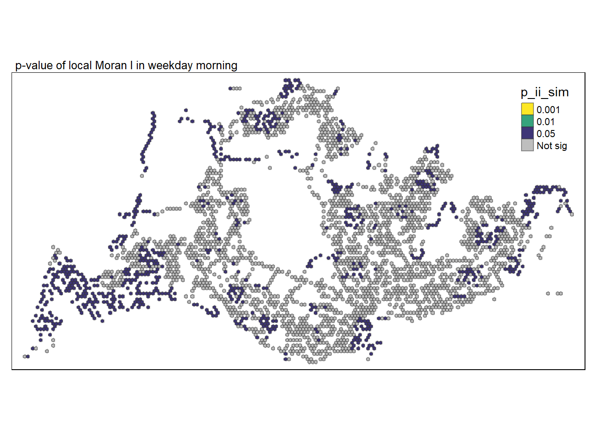
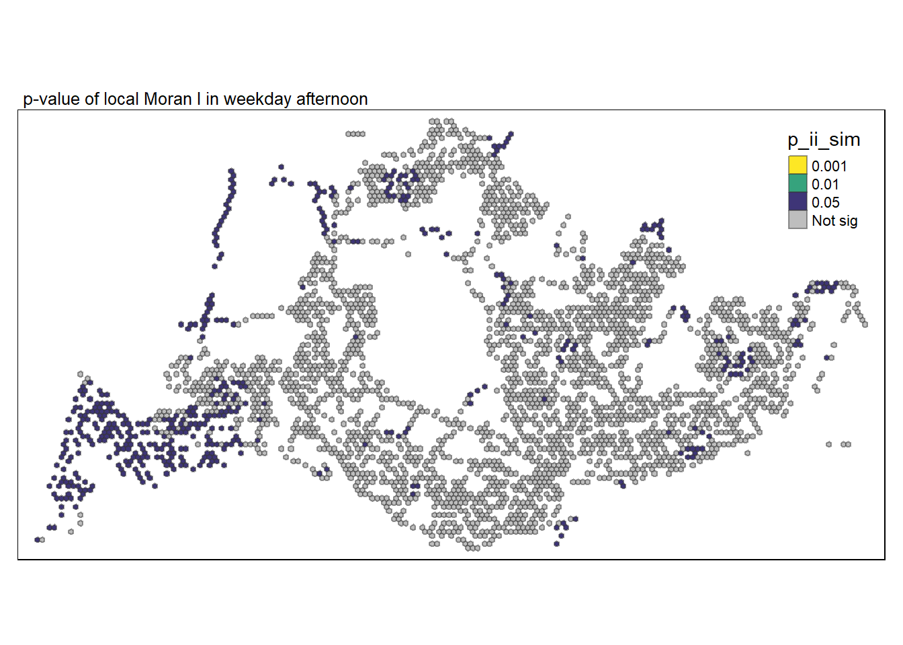
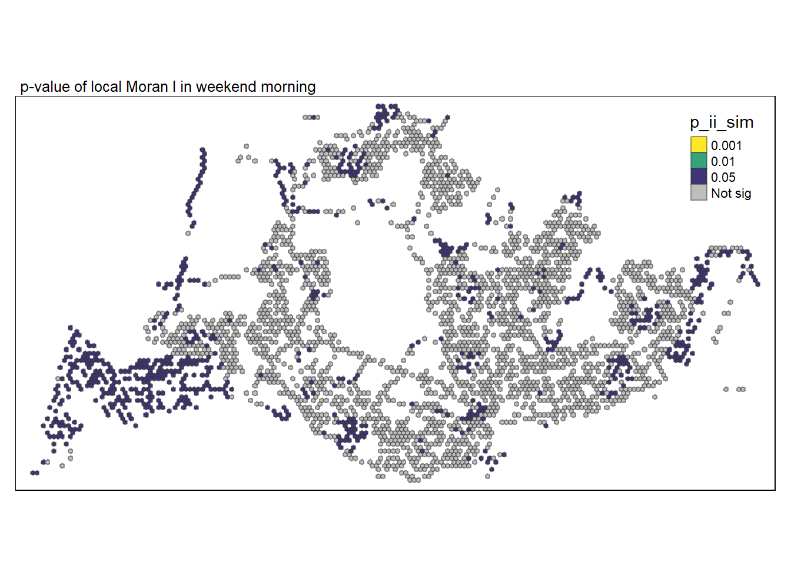
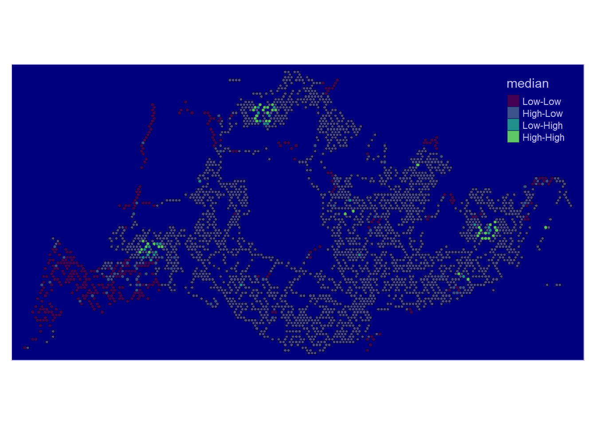
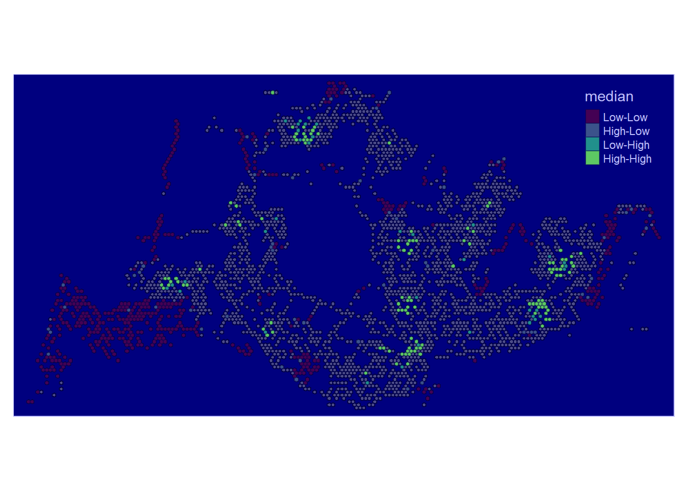
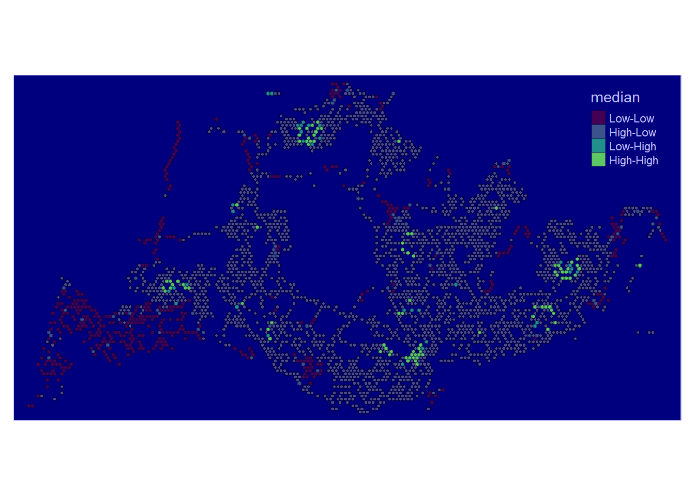

pacman::p_load(sf, sfdep, magrittr, tidyverse, tmap, knitr, RColorBrewer, viridis)Unveiling the spatial and spatio-temporal mobility patterns of public bus passengers in Singapore
Geospatial Analytics
Changelog:
\[1.0.0\] - 2024-07-23 - Initial build
Overview
In the era of digital urbanization, city-wide infrastructures, encompassing transportation modes like buses, taxis, and mass transit, have undergone significant digitization. This transformation has yielded extensive datasets that serve as a fundamental framework for monitoring movement patterns across both space and time. This shift is particularly evident with the widespread adoption of pervasive computing technologies, including GPS and RFID, notably integrated into vehicles. For instance, the utilization of smart cards and GPS devices on public buses enables the collection of comprehensive data on routes and ridership. Within these vast datasets lie inherent structures and patterns that offer valuable insights into the characteristics of measured phenomena, providing a deeper understanding of human movement and behaviors within urban environments. The identification, analysis, and comparison of these patterns present opportunities for enhanced urban management, offering valuable information for both public and private urban transport service providers. Despite these possibilities, current practices often restrict the use of massive locational data to basic tracking and mapping through Geographic Information System (GIS) applications. This limitation arises from the insufficient capabilities of conventional GIS in effectively analyzing and modeling spatial and spatio-temporal data.
Objective
In this study, we first perform
Exploratory Spatial Data Analysis (ESDA) to provide us an understanding of the movement patterns on a high level before proceeding to with either
Local Indicators of Spatial Association (LISA)
to undercover the spatial and spatio-temporal mobility patterns of public bus passengers in Singapore in detail.
Task
The specific tasks of this take-home exercise are as follows:
Geovisualisation and Analysis
With reference to the time intervals provided in the table below, compute the passenger trips generated by origin at the hexagon level,
Peak hour period Bus tap on time Weekday morning peak 6am to 9am Weekday afternoon peak 5pm to 8pm Weekend/holiday morning peak 11am to 2pm Weekend/holiday evening peak 4pm to 7pm Display the geographical distribution of the passenger trips by using appropriate geovisualisation methods,
Describe the spatial patterns revealed by the geovisualisation (not more than 200 words per visual).
Local Indicators of Spatial Association (LISA) Analysis
Compute LISA of the passengers trips generate by origin at hexagon level.
Display the LISA maps of the passengers trips generate by origin at hexagon level. The maps should only display the significant (i.e. p-value < 0.05)
With reference to the analysis results, draw statistical conclusions (not more than 200 words per visual).
The Data
Aspatial data
For the purpose of this take-home exercise, Passenger Volume by Origin Destination Bus Stops downloaded from LTA DataMall will be used.
Geospatial data
Two geospatial data will be used in this study, they are:
Bus Stop Location from LTA DataMall. It provides information about all the bus stops currently being serviced by buses, including the bus stop code (identifier) and location coordinates.
Master Plan 2019 Planning Sub-zone (No Sea) GIS data set of URA from data.gov.sg
Install R Package
1. Importing Data
We will import the data as a first step before proceeding with data cleaning, data wrangling and data exploration for the following:
- PassengerVolume, a csv file,
- BusStop, a point feature layer ESRI shapefile format
PassengerVolume is an aspatial data, we can import the data simply by using the read_csv function from tidyverse package and output it as a tibble dataframe called odbus
odbus <- read_csv("data/aspatial/origin_destination_bus_202310.csv")Rows: 5694297 Columns: 7
── Column specification ────────────────────────────────────────────────────────
Delimiter: ","
chr (5): YEAR_MONTH, DAY_TYPE, PT_TYPE, ORIGIN_PT_CODE, DESTINATION_PT_CODE
dbl (2): TIME_PER_HOUR, TOTAL_TRIPS
ℹ Use `spec()` to retrieve the full column specification for this data.
ℹ Specify the column types or set `show_col_types = FALSE` to quiet this message.Bus Stop is a geospatial data in .shp file. We save it as a sf data frame called busstop using the st_read function of the sf package. The data is then geo-referenced to coordinates from the Singapore SVY21 coordinate system (EPSG: 3414)
busstop <- st_read(dsn = "data/geospatial",
layer = "BusStop") %>%
st_transform(crs=3414)Reading layer `BusStop' from data source
`C:\weipengten\Main\RStudio\Geospatial_Analytics\Unveiling_spatio_temporal_mobility_patterns\data\geospatial'
using driver `ESRI Shapefile'
Simple feature collection with 5161 features and 3 fields
Geometry type: POINT
Dimension: XY
Bounding box: xmin: 3970.122 ymin: 26482.1 xmax: 48284.56 ymax: 52983.82
Projected CRS: SVY212. Data Wrangling
Data Exploration
glimpse(odbus)As we intend to utilize Bus-stop codes as our unique identifiers when joining with our other datasets, it is not advisable to have it remain as a chr datatype. In fact, we should change it to a factor datatype.
odbus$ORIGIN_PT_CODE <- as.factor(odbus$ORIGIN_PT_CODE)
odbus$DESTINATION_PT_CODE <- as.factor(odbus$DESTINATION_PT_CODE) Checking for Duplicates
There is no duplicates
duplicate <- odbus %>%
group_by_all() %>%
filter(n()>1) %>%
ungroup()
duplicateChecking for Missing Data
There is no missing data
summary(odbus)Classifying Peak Hours
With reference to the time intervals provided in the requirements, we computed the passenger trips generated by origin. The passenger trips by origin are saved in 4 dataframes based on their respective classifications namely:
weekday_morning_peak
weekday_afternoon_peak
weekend_morning_peak
weekend_evening_peak
Show the code
weekday_morning_peak <- odbus %>%
filter(DAY_TYPE == "WEEKDAY") %>%
filter(TIME_PER_HOUR >= 6 &
TIME_PER_HOUR <= 9) %>%
group_by(ORIGIN_PT_CODE) %>%
summarise(TRIPS = sum(TOTAL_TRIPS))
weekday_afternoon_peak <- odbus %>%
filter(DAY_TYPE == "WEEKDAY") %>%
filter(TIME_PER_HOUR >= 17 &
TIME_PER_HOUR <= 20) %>%
group_by(ORIGIN_PT_CODE) %>%
summarise(TRIPS = sum(TOTAL_TRIPS))
weekend_morning_peak <- odbus %>%
filter(DAY_TYPE == "WEEKENDS/HOLIDAY") %>%
filter(TIME_PER_HOUR >= 11 &
TIME_PER_HOUR <= 14) %>%
group_by(ORIGIN_PT_CODE) %>%
summarise(TRIPS = sum(TOTAL_TRIPS))
weekend_evening_peak <- odbus %>%
filter(DAY_TYPE == "WEEKENDS/HOLIDAY") %>%
filter(TIME_PER_HOUR >= 16 &
TIME_PER_HOUR <= 19) %>%
group_by(ORIGIN_PT_CODE) %>%
summarise(TRIPS = sum(TOTAL_TRIPS))
write_rds(weekday_morning_peak, "data/rds/weekday_morning_peak.rds")
weekday_morning_peak <- read_rds("data/rds/weekday_morning_peak.rds")
write_rds(weekday_afternoon_peak, "data/rds/weekday_afternoon_peak.rds")
weekday_afternoon_peak <- read_rds("data/rds/weekday_afternoon_peak.rds")
write_rds(weekend_morning_peak, "data/rds/weekend_morning_peak.rds")
weekend_morning_peak <- read_rds("data/rds/weekend_morning_peak.rds")
write_rds(weekend_evening_peak, "data/rds/weekend_evening_peak.rds")
weekend_evening_peak <- read_rds("data/rds/weekend_evening_peak.rds")In the code above, we have did a summation of Origin trips , grouped by the origin bus stop number for the 4 classifications through filtering for weekdays from weekends and by the stated time bins.
We save our processed data into .rds data format files using the write_rds() of readr package. The output file is saved in rds sub-folder. We do this to reduce the loading time and more importantly, we can avoid uploading the large raw files onto GitHub.
Passed initial checks for whole duplicate rows, however…
duplicate <- busstop %>%
group_by_all() %>%
filter(n()>1) %>%
ungroup()
duplicateduplicate bus stops found, removing duplicates directly…
Show the code
duplicates <- busstop[duplicated(busstop$BUS_STOP_N), ]
# Check if there are any duplicates
if (nrow(duplicates) > 0) {
cat("Duplicate values found in the BUS_STOP_N column.\n")
print(duplicates)
# Remove duplicates from the original dataframe
busstop <- busstop[!duplicated(busstop$BUS_STOP_N), ]
cat("Duplicates removed from the BUS_STOP_N column.\n")
} else {
cat("No duplicate values found in the BUS_STOP_N column.\n")
}Duplicate values found in the BUS_STOP_N column.
Simple feature collection with 16 features and 3 fields
Geometry type: POINT
Dimension: XY
Bounding box: xmin: 13488.02 ymin: 32604.36 xmax: 44055.75 ymax: 47934
Projected CRS: SVY21 / Singapore TM
First 10 features:
BUS_STOP_N BUS_ROOF_N LOC_DESC geometry
338 58031 UNK OPP CANBERRA DR POINT (27111.07 47517.77)
2035 82221 B01 Blk 3A POINT (35308.74 33335.17)
2038 97079 B14 OPP ST. JOHN'S CRES POINT (44055.75 38908.5)
2092 22501 B02 BLK 662A POINT (13488.02 35537.88)
2237 62251 B03 BEF BLK 471B POINT (35500.36 39943.34)
3158 53041 B07 Upp Thomson Road POINT (27956.34 37379.29)
3261 77329 B03 Pasir Ris Central POINT (40728.15 39438.15)
3265 96319 NIL YUSEN LOGISTICS POINT (42187.23 34995.78)
3303 52059 B09 BLK 219 POINT (30565.45 36133.15)
3411 43709 B06 BLK 644 POINT (18952.02 36751.83)
Duplicates removed from the BUS_STOP_N column.Checked duplicates removed successfully
Show the code
duplicates <- busstop[duplicated(busstop$BUS_STOP_N), ]
# Check if there are any duplicates
if (nrow(duplicates) > 0) {
cat("Duplicate values found in the BUS_STOP_N column.\n")
print(duplicates)
} else {
cat("No duplicate values found in the BUS_STOP_N column.\n")
}No duplicate values found in the BUS_STOP_N column.summary(busstop)Create Hexagon Dataset from busstop
Next we proceed to fulfill our requirement of preparing a hexagon dataset with specified cell dimensions of 250 by 250 units called hexagon using the st_make_grid function from the sf package.
We convert it into a sf dataframe called hexagon_sf using the st_sf function of sf package.
The code also adds a new variable/column called “grid_id” to the sf object. The “grid_id” values are assigned incrementally, starting from 1 and corresponding to the order of the hexagons in the grid. This step essentially assigns a unique identifier to each hexagon in the grid, facilitating further spatial analysis or mapping.
Show the code
hexagon = st_make_grid(busstop, c(250, 250), what = "polygons", square = FALSE)
# To sf and add grid ID
hexagon_sf = st_sf(hexagon) %>%
# add grid ID
mutate(grid_id = 1:length(lengths(hexagon)))Show the code
duplicates <- hexagon_sf[duplicated(hexagon_sf$grid_id), ]
# Check if there are any duplicates
if (nrow(duplicates) > 0) {
cat("Duplicate values found in the grid_id column.\n")
print(duplicates)
} else {
cat("No duplicate values found in the grid_id column.\n")
}No duplicate values found in the grid_id column.Examine The Grid
A brief overplot shows that there are 22134 grids in total and 19003 are without bus stops. We have a max of 5 bus stops per ORIGIN_GRID.
Show the code
hexagon_sf$n_colli = lengths(st_intersects(hexagon_sf, busstop))
count_all_grid_ids <- n_distinct(hexagon_sf$grid_id)
count_zero_bus_stops <- hexagon_sf %>%
filter(n_colli == 0) %>%
summarize(count = n_distinct(grid_id)) %>%
pull(count)
print(count_all_grid_ids)[1] 22134Show the code
print(count_zero_bus_stops)[1] 19007Show the code
summary(hexagon_sf$n_colli) Min. 1st Qu. Median Mean 3rd Qu. Max.
0.0000 0.0000 0.0000 0.2325 0.0000 5.0000 Important step to ensure this dataset will be useful for us
Filter for only hexagon data with non-zero counts of bus stops
hexagon_sf = filter(hexagon_sf, n_colli > 0)
write_rds(hexagon_sf, "data/rds/hexagon_sf.rds")
hexagon_sf <- read_rds("data/rds/hexagon_sf.rds")VIsualising the dataset
We can also do a visualisation to analyze the distribution of busstops. We specify break points at 0,1,2,3,4 and 5
From the map below, it is obvious that most hexagons have 1 or 2 bus stops in their grid with some having 4 or 5 bus stops. There is approximately one ‘cluster’ that are close to each other and having 4 or 5 bus stops in each region in North, East, South, West.
Show the code
tmap_mode("plot")tmap mode set to plottingShow the code
map_busstopcounts = tm_shape(hexagon_sf) +
tm_fill(
col = "n_colli",
palette = c("grey",rev(viridis(5))),
breaks = c(0, 1, 2, 3, 4, 5),
title = "Number of Busstops",
id = "grid_id",
showNA = FALSE,
alpha = 0.6,
popup.vars = c(
"Number of collisions: " = "n_colli"
),
popup.format = list(
n_colli = list(format = "f", digits = 0)
)
) +
tm_borders(col = "grey40", lwd = 0.7)
map_busstopcountsA few notable findings were:
In the North-West, bus stops are scarce around the cemetery in Choa Chu Kang, the nearest bus stops in that area are those along Lim Chu Kang road. Tengah Airbase is also located in that area.
At the far East, bus stops are scarce around Changi Airport
- “grid_id” = 22027 is an extreme outlier, we will need to drop it
Towards the middle, we have Paya Lebar Airbase
In the middle, we have the Central Water Catchment
A standalone bus stop in Sentosa Island
- “grid_id” = 11471 is a potential outlier and should be considered for exclusion
A few bus stops in Johor are surprisingly in our dataset too and in
- “grid_id” = 7068 is an extreme outlier, we will need to drop it.
- “grid_id” for 8113,8237,8351,8485 are potential outliers as well
Other than those mentioned above, the positioning of the rest of the bus stops seem to be acceptable and will not skew our dataset too much.
Data Cleaning
Hence, let’s proceed straight to dropping these data that will likely cause problems for our analysis. After deeper consideration, we decided that we should drop grid_ids for 22027, 11471 and 7068
Show the code
# Combine Busstop and Hexagon
hexagon_sf <- hexagon_sf %>%
filter(!grid_id %in% c(22027, 11471, 7068))We needed to perform aggregation of passenger trips by Hexagon instead of Origin Bus Stop, hence we need to first integrate bus stop data and the hexagon dataset using the st_intersection function from the sf package. The intersection operation retains only the spatial elements (points) that overlap between the original bus stop locations and the hexagonal grid.The resulting busstop_hexagon dataset contains information about which hexagon grid each bus stop is located in.
Show the code
# Combine Busstop and Hexagon
busstop_hexagon <- st_intersection(busstop, hexagon_sf) %>%
select(BUS_STOP_N, grid_id) %>%
st_drop_geometryWarning: attribute variables are assumed to be spatially constant throughout
all geometriesHowever, it is found that there is still one duplicate found despite the thorough cleaning we did earlier:
- Some bus stops were found to be in multiple grids, this is illogical and should be dropped from analysis.
- Example: BUS_STOP 250559 appeared both in grid 4 and 128Show the code
duplicate <- busstop_hexagon %>%
group_by(BUS_STOP_N) %>%
filter(n()>1) %>%
ungroup()
duplicate# A tibble: 2 × 2
BUS_STOP_N grid_id
<chr> <int>
1 25059 4
2 25059 128Thus, the following preprocessing steps needs to be done:
- filter out bus stops that have multiple grid_ids
The output now shows that we have successful dealt with duplicates and erroneous data from the integration .
Show the code
busstop_hexagon <- busstop_hexagon %>%
group_by(BUS_STOP_N) %>%
filter(n_distinct(grid_id)==1) %>%
ungroup()
duplicate <- busstop_hexagon %>%
group_by(BUS_STOP_N) %>%
filter(n()>1) %>%
ungroup()
duplicate# A tibble: 0 × 2
# ℹ 2 variables: BUS_STOP_N <chr>, grid_id <int>Next, we sum up the total passenger trips group by each hexagon grid as ORIGIN_GRID for the 4 dataframes seperately to get the resulting tibble dataframes.
weekday_morning_peak_join_list <- left_join(weekday_morning_peak , busstop_hexagon,
by = c("ORIGIN_PT_CODE" = "BUS_STOP_N")) %>%
rename(ORIGIN_BS = ORIGIN_PT_CODE, ORIGIN_GRID = grid_id) %>%
group_by(ORIGIN_GRID) %>%
summarise(TOT_TRIPS = sum(TRIPS))
weekday_afternoon_peak_join_list <- left_join(weekday_afternoon_peak , busstop_hexagon,
by = c("ORIGIN_PT_CODE" = "BUS_STOP_N")) %>%
rename(ORIGIN_BS = ORIGIN_PT_CODE, ORIGIN_GRID = grid_id) %>%
group_by(ORIGIN_GRID) %>%
summarise(TOT_TRIPS = sum(TRIPS))
weekend_morning_peak_join_list <- left_join(weekend_morning_peak , busstop_hexagon,
by = c("ORIGIN_PT_CODE" = "BUS_STOP_N")) %>%
rename(ORIGIN_BS = ORIGIN_PT_CODE, ORIGIN_GRID = grid_id) %>%
group_by(ORIGIN_GRID) %>%
summarise(TOT_TRIPS = sum(TRIPS))
weekend_evening_peak_join_list <- left_join(weekend_evening_peak , busstop_hexagon,
by = c("ORIGIN_PT_CODE" = "BUS_STOP_N")) %>%
rename(ORIGIN_BS = ORIGIN_PT_CODE, ORIGIN_GRID = grid_id) %>%
group_by(ORIGIN_GRID) %>%
summarise(TOT_TRIPS = sum(TRIPS))After that is done, we have to join back with our sf dataset using grid_id.
This code chunk below performs several operations to analyze the total number of trips (TOT_TRIPS) during weekday morning peak hours based on the origin bus stop and its corresponding hexagonal grid instead of its previous bus stop number we are using.
Show the code
weekday_morning_peak_join_geometry <- left_join(hexagon_sf,
weekday_morning_peak_join_list,
by = c("grid_id" = "ORIGIN_GRID"))
weekday_afternoon_peak_join_geometry <- left_join(hexagon_sf,
weekday_afternoon_peak_join_list,
by = c("grid_id" = "ORIGIN_GRID"))
weekend_morning_peak_join_geometry <- left_join(hexagon_sf,
weekend_morning_peak_join_list,
by = c("grid_id" = "ORIGIN_GRID"))
weekend_evening_peak_join_geometry <- left_join(hexagon_sf,
weekend_evening_peak_join_list,
by = c("grid_id" = "ORIGIN_GRID"))
write_rds(weekday_morning_peak_join_geometry, "data/rds/weekday_morning_peak_join_geometry.rds")
weekday_morning_peak_join_geometry <- read_rds("data/rds/weekday_morning_peak_join_geometry.rds")
write_rds(weekday_afternoon_peak_join_geometry, "data/rds/weekday_afternoon_peak_join_geometry.rds")
weekday_afternoon_peak_join_geometry <- read_rds("data/rds/weekday_afternoon_peak_join_geometry.rds")
write_rds(weekend_morning_peak_join_geometry, "data/rds/weekend_morning_peak_join_geometry.rds")
weekend_morning_peak <- read_rds("data/rds/weekend_morning_peak.rds")
write_rds(weekend_evening_peak_join_geometry, "data/rds/weekend_evening_peak_join_geometry.rds")
weekend_evening_peak_join_geometry <- read_rds("data/rds/weekend_evening_peak_join_geometry.rds")3. Exploratory Data Analysis (EDA)
We discovered that the data has a right-tailed distribution for all time classifications.
Show the code
combined_data <- rbind(
transform(weekday_morning_peak_join_geometry, period = "Weekday Morning Peak"),
transform(weekday_afternoon_peak_join_geometry, period = "Weekday Afternoon Peak"),
transform(weekend_morning_peak_join_geometry, period = "Weekend Morning Peak"),
transform(weekend_evening_peak_join_geometry, period = "Weekend Evening Peak")
)
# Plot combined data
ggplot(data = combined_data,
aes(x = as.numeric(`TOT_TRIPS`))) +
geom_histogram(bins = 20,
color = "black",
fill = "light blue") +
facet_wrap(~period, scales = "free_y") +
labs(title = "Distribution of Passenger Trips during Different Time Periods",
subtitle = "Histograms show the distribution of total trips for different time periods",
x = "Total Trips",
y = "Frequency")Warning: Removed 343 rows containing non-finite outside the scale range
(`stat_bin()`).Similarly, for trips per bus stop…
Show the code
combined_density <- combined_data %>%
mutate(`trips_per_busstop` = (`TOT_TRIPS` / n_colli))
# Plot combined data
ggplot(data = combined_density,
aes(x = as.numeric(`trips_per_busstop`))) +
geom_histogram(bins = 20,
color = "black",
fill = "light blue") +
facet_wrap(~period, scales = "free_y") +
labs(title = "Distribution of Passenger Trips during Different Time Periods",
subtitle = "Histograms show the distribution of total trips for different time periods",
x = "Total Trips Per BusStop",
y = "Frequency")Warning: Removed 343 rows containing non-finite outside the scale range
(`stat_bin()`).A quick examination of the distribution of origin trips across all four periods reveals that the weekday morning peak has the highest number of trip counts, followed by the weekday afternoon peak, the weekend morning peak, and finally, the weekend evening peak.
This observation suggests that, during the specified time periods, there is a discernible pattern in the frequency of trips, with a notable concentration of trips during weekday mornings. This information could imply potential trends in commuting behavior or specific usage patterns during different times of the week.
Transport agencies can allocate resources such as personnel and busses better with this information. Frequency of busses should also be increased for weekday afternoon peak period.
Show the code
ggplot(combined_data, aes(x = factor(period), y = TOT_TRIPS, fill = factor(period))) +
geom_bar(stat = "identity", position = "dodge") +
labs(title = "Counts of Total Trips Grouped by Periods",
x = "Period",
y = "TOT_TRIPS Count") +
theme_minimal() +
theme(axis.text.x = element_text(angle = 45, hjust = 1)) Warning: Removed 343 rows containing missing values or values outside the scale range
(`geom_bar()`).Trips per bus stop turns out to demonstrate similar patterns as compared to total trips.
This actually suggest that the transport authorities have done well in the planning of decision of bus stop locations over the years.
Perhaps this also mean that it is safe to analyse the choropleths using total trips by itself later on.
Show the code
ggplot(combined_density, aes(x = factor(period), y = trips_per_busstop, fill = factor(period))) +
geom_bar(stat = "identity", position = "dodge") +
labs(title = "Counts of Trips Per Bus Stop Grouped by Periods",
x = "Period",
y = "Trips Per Bus Stop") +
theme_minimal() +
theme(axis.text.x = element_text(angle = 45, hjust = 1)) Warning: Removed 343 rows containing missing values or values outside the scale range
(`geom_bar()`).
4. Geovisualisation and Analysis
Important Considerations
Due to the use of small hexagon tiles and a heavily right skewed distribution, quantile classification proves to provide little value. We decided that kmeans classification is best due to the ability to create discrete classes. This helps us to compare the 4 periods easily.
We previously derived number of Passenger Trips using the bus stops as the origin. This means that that some tiles could have missing data due to the lack of trips originating from there but that not necessary be the case for trips with that as the destination.
We previously excluded tiles with no bus stops earlier in hexagon_sf, hence any missing data present here is not due to missing bus stops
General Observations across all 4 interval classifications
The bus stops along Lim Chu Kang exhibit minimal to no origin trips on both weekdays and weekends. This can be attributed to the presence of a cemetery in that area, making it more practical for individuals to use private transportation.
Additionally, along the eastern coast, there are several bus stops without origin trips on weekdays. However, the situation changes on weekends and holidays, although the overall volume remains low. It is advisable to consider adjusting the bus schedule in that region for weekdays. A similar pattern is observed for the islands in the North-West..
Origin Trips for a few bus stops near the customs remain high through weekdays and wekends. Also, one bus stop in Johor is consistently high in origin trips.
In central areas, origin trips are not high during weekday mornings but are high during weekday afternoons. This is probably due to residential planning by the URA where residents travel from the other regions to the central and business districts.
Show the code
tmap_mode("plot")tmap mode set to plottingShow the code
inferno_palette <- inferno(5)
tmap_options(check.and.fix = TRUE)
tm_shape(weekday_morning_peak_join_geometry)+
tm_fill("TOT_TRIPS",
style = "kmeans",
palette = viridis(5),
title = "Passenger trips") +
tm_layout(main.title = "Passenger trips during Weekday morning peak",
main.title.position = "center",
main.title.size = 1.2,
legend.height = 0.45,
legend.width = 0.35,
frame = TRUE) +
tm_borders(alpha = 0.5) +
tm_scale_bar() +
tm_grid(alpha =0.2)+
tmap_style("natural")tmap style set to "natural"other available styles are: "white", "gray", "cobalt", "col_blind", "albatross", "beaver", "bw", "classic", "watercolor" 
Show the code
tmap_mode("plot")tmap mode set to plottingShow the code
tmap_options(check.and.fix = TRUE)
tm_shape(weekday_afternoon_peak_join_geometry)+
tm_fill("TOT_TRIPS",
style = "kmeans",
palette = viridis(5),
title = "Passenger trips") +
tm_layout(main.title = "Passenger trips during Weekday afternoon peak",
main.title.position = "center",
main.title.size = 1.2,
legend.height = 0.45,
legend.width = 0.35,
frame = TRUE) +
tm_borders(alpha = 0.5) +
tm_scale_bar() +
tm_grid(alpha =0.2)+
tmap_style("natural")tmap style set to "natural"other available styles are: "white", "gray", "cobalt", "col_blind", "albatross", "beaver", "bw", "classic", "watercolor" 
Show the code
tmap_mode("plot")tmap mode set to plottingShow the code
tmap_options(check.and.fix = TRUE)
tm_shape(weekend_morning_peak_join_geometry)+
tm_fill("TOT_TRIPS",
style = "kmeans",
palette = viridis(5),
title = "Passenger trips") +
tm_layout(main.title = "Passenger trips during Weekend/holiday morning peak",
main.title.position = "center",
main.title.size = 1.2,
legend.height = 0.45,
legend.width = 0.35,
frame = TRUE) +
tm_borders(alpha = 0.5) +
tm_scale_bar() +
tm_grid(alpha =0.2)+
tmap_style("natural")tmap style set to "natural"other available styles are: "white", "gray", "cobalt", "col_blind", "albatross", "beaver", "bw", "classic", "watercolor" 
Show the code
tmap_mode("plot")tmap mode set to plottingShow the code
tmap_options(check.and.fix = TRUE)
tm_shape(weekend_evening_peak_join_geometry)+
tm_fill("TOT_TRIPS",
style = "kmeans",
palette = viridis(5),
title = "Passenger trips") +
tm_layout(main.title = "Passenger trips during Weekend/holiday evening peak",
main.title.position = "center",
main.title.size = 1.2,
legend.height = 0.45,
legend.width = 0.35,
frame = TRUE) +
tm_borders(alpha = 0.5) +
tm_scale_bar() +
tm_grid(alpha =0.2) +
tmap_style("natural")tmap style set to "natural"other available styles are: "white", "gray", "cobalt", "col_blind", "albatross", "beaver", "bw", "classic", "watercolor" 
5. Local Indicators of Spatial Association (LISA) Analysis
Local Indicators of Spatial Association (LISA) Analysis:
Local Indicators of Spatial Association (LISA) is a statistical technique used in spatial analysis to identify and assess spatial patterns of clustering or dispersion within a geographical dataset. LISA analysis helps to uncover local patterns of spatial autocorrelation, providing insights into whether similar values tend to cluster together or if there are areas with dissimilar values.
LISA analysis is based on the concept of spatial autocorrelation, which measures the degree to which neighboring locations are similar or dissimilar in terms of a particular variable. (In Our case, it is Origin Passenger Trips)
Two key LISA statistics are Moran’s I and the associated p-value, for each spatial unit (hexagon grid in our case) to determine if they are part of a significant cluster, outlier, or exhibit no significant pattern.
Local Moran’s I identifies clusters by categorizing each unit as High-High (high value surrounded by high values), Low-Low (low value surrounded by low values), High-Low (high value surrounded by low values), or Low-High (low value surrounded by high values).
- Decision-making process
Due to the use of hexagon grids, we had many empty grids and this proves difficult to derive contiguity weights. Hence, we attempted to derive distance weights instead
Fixed distance weight matrix was used in deriving the weights and neighbors.
5.1 Deriving adaptive distance weights
The summary statistics report below shows that the maximum nearest neighbour distance is 901.4m. By using a threshold value of 902m will ensure that each area will have at least one neighbour.
Show the code
geo <- sf::st_geometry(hexagon_sf)
nb <- st_knn(geo, longlat = TRUE)! Polygon provided. Using point on surface.Show the code
dists <- unlist(st_nb_dists(geo, nb))! Polygon provided. Using point on surface.Show the code
summary(dists) Min. 1st Qu. Median Mean 3rd Qu. Max.
250.0 250.0 250.0 257.6 250.0 901.4 Now we will go ahead to compute the fixed distance weights by using the code chunk below.
The use of .allow_zero = TRUE option is to assign the value of 0 to rows with missing values for TOT_TRIPS as missing values will create problems for our analysis later
Show the code
wm_q_1 <- weekday_morning_peak_join_geometry %>%
mutate(TOT_TRIPS = replace_na(TOT_TRIPS, 0),
nb = st_dist_band(hexagon,
upper = 902),
wt = st_weights(nb,
style = "W",
allow_zero = TRUE),
.before = 1) ! Polygon provided. Using point on surface.Show the code
wm_q_2 <- weekday_afternoon_peak_join_geometry %>%
mutate(TOT_TRIPS = replace_na(TOT_TRIPS, 0),
nb = st_dist_band(hexagon,
upper = 902),
wt = st_weights(nb,
style = "W",
allow_zero = TRUE),
.before = 1) ! Polygon provided. Using point on surface.Show the code
wm_q_3 <- weekend_morning_peak_join_geometry %>%
mutate(TOT_TRIPS = replace_na(TOT_TRIPS, 0),
nb = st_dist_band(hexagon,
upper = 902),
wt = st_weights(nb,
style = "W",
allow_zero = TRUE),
.before = 1) ! Polygon provided. Using point on surface.Show the code
wm_q_4 <- weekend_evening_peak_join_geometry %>%
mutate(TOT_TRIPS = replace_na(TOT_TRIPS, 0),
nb = st_dist_band(hexagon,
upper = 902),
wt = st_weights(nb,
style = "W",
allow_zero = TRUE),
.before = 1) ! Polygon provided. Using point on surface.5.2 Computing local Moran’s I
In this section, we will compute Local Moran’s I of Total Passenger Trips at county level by using local_moran() of sfdep package.
The provided code conducts a Local Moran’s I analysis on four distinct datasets (wm_q_1, wm_q_2, wm_q_3, wm_q_4), each associated with specific time periods or scenarios.
The analysis focuses on the spatial autocorrelation of the variable TOT_TRIPS within each dataset, employing the local_moran function with
neighbors (nb) and
weights (wt) and
99 simulations.
The calculated Local Moran’s I statistic assesses whether nearby observations exhibit similar total trip values, revealing spatial patterns and clusters.
The use of unnest implies a need to extract detailed information about the spatial relationships between observations and their neighbors after the Local Moran’s I analysis.
Show the code
lisa_1 <- wm_q_1 %>%
mutate(local_moran = local_moran(
TOT_TRIPS, nb, wt, nsim = 99),
.before = 1) %>%
unnest(local_moran)
lisa_2 <- wm_q_2 %>%
mutate(local_moran = local_moran(
TOT_TRIPS, nb, wt, nsim = 99),
.before = 1) %>%
unnest(local_moran)
lisa_3 <- wm_q_3 %>%
mutate(local_moran = local_moran(
TOT_TRIPS, nb, wt, nsim = 99),
.before = 1) %>%
unnest(local_moran)
lisa_4 <- wm_q_4 %>%
mutate(local_moran = local_moran(
TOT_TRIPS, nb, wt, nsim = 99),
.before = 1) %>%
unnest(local_moran)5.3 Visualising local Moran’s I
In the following code section, tmap functions are utilized to create a choropleth map based on the values in the ii field, representing the Local Moran’s I values. The chosen tmap_style option is set to albatross to suit the grid’s nature and emphasize clusters, where lighter colors indicate positive values and darker colors indicate negative values.
It’s important to note that a positive Local Moran’s I value signifies a feature’s membership in a cluster, while a negative value suggests that a feature is an outlier.
Examining the map, regions shaded in various hues of green indicate their membership in one or more clusters.While there are overlapping areas among the maps generated for the four periods of interest, there are also discrepancies.
However, relying solely on the local Moran’s score is insufficient for depicting spatial clustering, as it doesn’t provide information about whether the variable’s value (Total Passenger Trips) being examined is high or low, and whether the test result is statistically significant. We need to proceed with analyzing only the regions with statistically significant values of total passenger trips.
Show the code
tmap_mode("plot")tmap mode set to plottingShow the code
tm_shape(lisa_1) +
tm_fill("ii",
style = "kmeans",
palette = viridis(5)) +
tm_borders(alpha = 0.5) +
tm_layout(main.title = "local Moran I of Bus Trips in weekday morning",
main.title.size = 0.8) +
tmap_style("albatross")tmap style set to "albatross"other available styles are: "white", "gray", "natural", "cobalt", "col_blind", "beaver", "bw", "classic", "watercolor" 
Show the code
tmap_mode("plot")tmap mode set to plottingShow the code
tm_shape(lisa_2) +
tm_fill("ii",
style = "kmeans",
palette = viridis(5)) +
tm_borders(alpha = 0.5) +
tm_layout(main.title = "local Moran I of Bus Trips in weekday afternoon",
main.title.size = 0.8) +
tmap_style("albatross")tmap style set to "albatross"other available styles are: "white", "gray", "natural", "cobalt", "col_blind", "beaver", "bw", "classic", "watercolor" Show the code
tmap_mode("plot")tmap mode set to plottingShow the code
tm_shape(lisa_3) +
tm_fill("ii",
style = "kmeans",
palette = viridis(5)) +
tm_borders(alpha = 0.5) +
tm_layout(main.title = "local Moran I of Bus Trips in weekend morning",
main.title.size = 0.8) +
tmap_style("albatross")tmap style set to "albatross"other available styles are: "white", "gray", "natural", "cobalt", "col_blind", "beaver", "bw", "classic", "watercolor" Show the code
tmap_mode("plot")tmap mode set to plottingShow the code
tm_shape(lisa_4) +
tm_fill("ii",
style = "kmeans",
palette = viridis(5)) +
tm_borders(alpha = 0.5) +
tm_layout(main.title = "local Moran I of Bus Trips in weekend afternoon",
main.title.size = 0.8) +
tmap_style("albatross")tmap style set to "albatross"other available styles are: "white", "gray", "natural", "cobalt", "col_blind", "beaver", "bw", "classic", "watercolor" 5.4 Visualising p-value of local Moran’s I
In the code chunk below, tmap functions are used to prepare a choropleth map by using value in the p_ii_sim field
We will visualize solely the statistically significant local Moran’s I values (p_ii_sim < 0.05) through the subsequent code snippet.
Comparing local Moran’s I together with its p_ii_sim values, a few observations were revealed:
There are clusters near customs and throughout most of west area. They are all statistically significant.
Clusters and dispersions found in the South / Central are mostly not statistically significant and should be ignored.
There are both many clusters and dispersions found in Bedok, Tampines, Pasir Ris and Changi that are found to be statistically significant. However, not so much for other parts of East.
Clusters and Dispersions found in North east and North are also statistically significant.
These Clusters found seem to match our expectations as they are within residential zones. However, this is possible also because of bus interchanges and the wider options of buses avaliable near these bus interchanges.
What about the dispersion that we are observing? It is easy to dismiss that. However they tend to happen around those clusters found. This can actually be explained with the fact that are OTHER options other than taking buses such as a little bit of walk or…. Cycling!!! as a form of commuting.
This trend may not be immediately apparent to individuals who don’t utilize public transportation or to foreigners. However, it’s becoming increasingly common for Singaporeans to use personal transport, such as bicycles, to reach bus interchanges instead of waiting for buses directly at their residences. This choice is driven by the realization that cycling to the bus interchange can be a more time-efficient option. The areas surrounding bus interchanges often face congestion with numerous bus stops and traffic lights, turning what should be a short journey into a lengthy one.
Show the code
tmap_mode("plot")tmap mode set to plottingShow the code
tm_shape(lisa_1) +
tm_fill("p_ii_sim",
palette = c(rev(viridis(5)), "grey"),
breaks = c(0, 0.001, 0.01, 0.05, 1),
labels = c("0.001", "0.01", "0.05", "Not sig")) +
tm_borders(alpha = 0.5) +
tm_layout(main.title = "p-value of local Moran I in weekday morning",
main.title.size = 0.8) +
tmap_style("watercolor")tmap style set to "watercolor"other available styles are: "white", "gray", "natural", "cobalt", "col_blind", "albatross", "beaver", "bw", "classic" 
There are few dispersions this time round and more clusters found instead.
Most of previously residential areas identified are found to not display any statistically significant patterns, other than some parts around tampines and north east which could be hubs designated by the government.
Many statistically significant clusters are found around west region which is also an industrial region.
Central business district areas do not exhibit any significant patterns, it seems most office workers do not take buses home but the MRT instead.
Show the code
tmap_mode("plot")tmap mode set to plottingShow the code
tm_shape(lisa_2) +
tm_fill("p_ii_sim",
palette = c(rev(viridis(5)), "grey"),
breaks = c(0, 0.001, 0.01, 0.05, 1),
labels = c("0.001", "0.01", "0.05", "Not sig")) +
tm_borders(alpha = 0.5) +
tm_layout(main.title = "p-value of local Moran I in weekday afternoon",
main.title.size = 0.8) +
tmap_style("watercolor")tmap style set to "watercolor"other available styles are: "white", "gray", "natural", "cobalt", "col_blind", "albatross", "beaver", "bw", "classic" 
It seems there are more dispersions during mornings peak hours even for weekends/holidays.
There are less clusters as compared to weekdays. The most significant clusters are those found around Bugis and Lavender.
Clusters found near NUS are statistically significant, it is unsure if it is due to the school itself.
Show the code
tmap_mode("plot")tmap mode set to plottingShow the code
tm_shape(lisa_3) +
tm_fill("p_ii_sim",
palette = c(rev(viridis(5)), "grey"),
breaks = c(0, 0.001, 0.01, 0.05, 1),
labels = c("0.001", "0.01", "0.05", "Not sig")) +
tm_borders(alpha = 0.5) +
tm_layout(main.title = "p-value of local Moran I in weekend morning",
main.title.size = 0.8) +
tmap_style("watercolor")tmap style set to "watercolor"other available styles are: "white", "gray", "natural", "cobalt", "col_blind", "albatross", "beaver", "bw", "classic" 
There are very few dispersions this time round, with three in Johor, this is not surprising as any Singapore would understand that most won’t choose that time to travel back to Singapore and this data only record trips between Singapore bus stops and does not include trips not under SBS.
More clusters are shown and are quite concentrated as compared to weekdays.
Show the code
tmap_mode("plot")tmap mode set to plottingShow the code
tm_shape(lisa_4) +
tm_fill("p_ii_sim",
palette = c(rev(viridis(5)), "grey"),
breaks = c(0, 0.001, 0.01, 0.05, 1),
labels = c("0.001", "0.01", "0.05", "Not sig")) +
tm_borders(alpha = 0.5) +
tm_layout(main.title = "p-value of local Moran I in weekend afternoon",
main.title.size = 0.8) +
tmap_style("watercolor")tmap style set to "watercolor"other available styles are: "white", "gray", "natural", "cobalt", "col_blind", "albatross", "beaver", "bw", "classic" 6 Visualising LISA map
In this visualisation, LISA categorises each region into one of four groups:
High-High indicates grids with high number of origin trips located next to other grids with high number of origin trips
Low-High indicates grids with low number of origin trips located next to other grids with high number of origin trips
High-Low indicates grids with high number of origin trips located next to other grids with low number of origin trips
Low-Low indicates grids with low number of origin trips located next to other grids with low number of origin trips
In this visualisation for Weekday Morning Peak, some observations were found:
High-High regions were found throughout parts of North-East, North-West, Central and West, except South. These spots also seem to be nearby each other in their respective regions, seemingly signifying hubs.
Low-High regions are few in existence and happened to be near High-High regions
High-Low regions are almost none.
Low-Low regions happened to be found near the borders of Singapore mostly. They coincide with non-residential areas like changi airport Tuas and near cemetries.
Show the code
tmap_mode("plot")tmap mode set to plottingShow the code
lisa_sig <- lisa_1 %>%
filter(p_ii_sim < 0.05)
tmap_mode("plot")tmap mode set to plottingShow the code
tm_shape(lisa_1) +
tm_polygons() +
tm_borders(alpha = 0.5) +
tm_shape(lisa_sig) +
tm_fill("median",
palette = c(viridis(5))) +
tm_borders(alpha = 0.4)+
tmap_style("albatross")tmap style set to "albatross"other available styles are: "white", "gray", "natural", "cobalt", "col_blind", "beaver", "bw", "classic", "watercolor" Warning: One tm layer group has duplicated layer types, which are omitted. To
draw multiple layers of the same type, use multiple layer groups (i.e. specify
tm_shape prior to each of them).High-High and High-Low regions are few here and definitely much less than during Weekday Morning Peak.
There are three clusters of High-High regions (Jurong west, Woodlands, Bedok), with some Low-High regions around..
Low-Low regions are found in Tuas Industrial are and throughout parts of Singapore
Most Residential areas show no patterns.
Show the code
tmap_mode("plot")tmap mode set to plottingShow the code
lisa_sig <- lisa_2 %>%
filter(p_ii_sim < 0.05)
tmap_mode("plot")tmap mode set to plottingShow the code
tm_shape(lisa_2) +
tm_polygons() +
tm_borders(alpha = 0.5) +
tm_shape(lisa_sig) +
tm_fill("median",
palette = c(viridis(5))) +
tm_borders(alpha = 0.4) +
tmap_style("albatross")tmap style set to "albatross"other available styles are: "white", "gray", "natural", "cobalt", "col_blind", "beaver", "bw", "classic", "watercolor" Warning: One tm layer group has duplicated layer types, which are omitted. To
draw multiple layers of the same type, use multiple layer groups (i.e. specify
tm_shape prior to each of them).
More High-High clusters are found with the previous three High-High clusters remaining strong for (Jurong west, Woodlands, Tampines). In addition to those three, are additional clusters found around Ang Mo Kio, Toa Payoh, Bedok and Bugis.
Low-Low areas are found near Tuas and Changi Airport again and the stretch along cemeteries in Lim Chu Kang
Show the code
tmap_mode("plot")tmap mode set to plottingShow the code
lisa_sig <- lisa_3 %>%
filter(p_ii_sim < 0.05)
tmap_mode("plot")tmap mode set to plottingShow the code
tm_shape(lisa_3) +
tm_polygons() +
tm_borders(alpha = 0.5) +
tm_shape(lisa_sig) +
tm_fill("median",
palette = c(viridis(5))) +
tm_borders(alpha = 0.4) +
tmap_style("albatross")tmap style set to "albatross"other available styles are: "white", "gray", "natural", "cobalt", "col_blind", "beaver", "bw", "classic", "watercolor" Warning: One tm layer group has duplicated layer types, which are omitted. To
draw multiple layers of the same type, use multiple layer groups (i.e. specify
tm_shape prior to each of them).
The patterns for this section seems almost similar to Weekend Morning Peak, most clusters remain but shows less activity compared to its morning.
Show the code
tmap_mode("plot")tmap mode set to plottingShow the code
lisa_sig <- lisa_4 %>%
filter(p_ii_sim < 0.05)
tmap_mode("plot")tmap mode set to plottingShow the code
tm_shape(lisa_4) +
tm_polygons() +
tm_borders(alpha = 0.5) +
tm_shape(lisa_sig) +
tm_fill("median",
palette = c(viridis(5))) +
tm_borders(alpha = 0.4) +
tmap_style("albatross")tmap style set to "albatross"other available styles are: "white", "gray", "natural", "cobalt", "col_blind", "beaver", "bw", "classic", "watercolor" Warning: One tm layer group has duplicated layer types, which are omitted. To
draw multiple layers of the same type, use multiple layer groups (i.e. specify
tm_shape prior to each of them).